Técnicas dos melhores competidores do Kaggle
Coleta técnicas de machine learning usadas pelos vencedores de competições do Kaggle, processando em massa, com modelos de linguagem, o código público dos times que ficaram no topo do leaderboard. Cada notebook vira uma análise em quatro seções numeradas e depois tabelas de técnicas, de contrastes entre a prática comum e a escolha do especialista e um glossário, com a saída validada em Pydantic e conferida contra o texto de origem.
- 745competições com metadados coletados
- 3.508notebooks com o código extraído
- 2.720análises escritas por LLM
- 19.185técnicas catalogadas
Coleta e análise
EXTRAÇÃO

BASE E QUALIDADE

Os metadados das competições vêm da API do Kaggle e o código dos notebooks é coletado com Selenium. O corpus reúne os notebooks dos times do topo do leaderboard e os mais votados de cada competição, o que dá os dois lados que a etapa de contraste compara.
Cada notebook vai inteiro para um LLM, junto com a descrição da competição, e volta como uma análise em quatro seções numeradas. A numeração é imposta pelo prompt e serve de referência para o passo seguinte cortar o texto.
Estruturação e qualidade
Uma única chamada por análise converte a prosa em tabelas, com a saída validada em Pydantic. A etapa do pipeline de ML é um enum listado explicitamente no prompt, e um normalizador corrige as variantes previsíveis antes da validação. O processamento roda num pool de dez slots com rotação de chaves entre provedores e é retomável por checkpoint a cada notebook.
Um contraste só é registrado quando a própria análise descreve as duas abordagens, a mais usada pelos competidores e a adotada pelo time vencedor, o que impede o modelo de preencher a prática comum por suposição. Um script de auditoria confere as linhas extraídas contra o texto de origem e emite um relatório.
A base
A base tem 19.185 técnicas catalogadas a partir de 2.720 análises, cobrindo 2.528 dos 2.603 notebooks com pipeline de ML. Cada técnica carrega a etapa do pipeline, um grau de raridade e, quando o texto declara, o ganho obtido e o número que o acompanha.
Python · pandas · API do Kaggle · Selenium · Groq · Pydantic · Jupyter · matplotlib